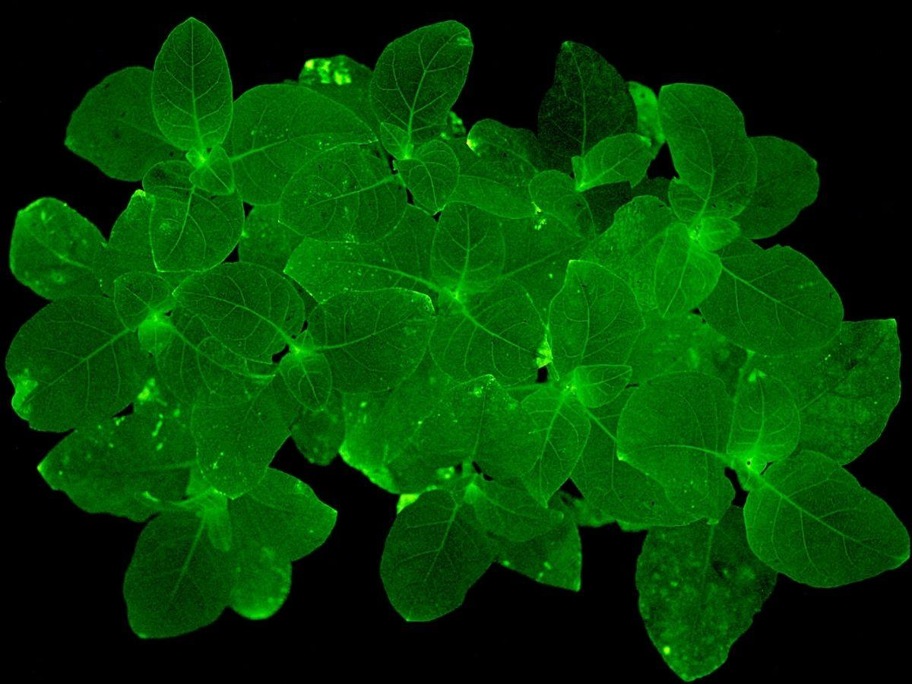
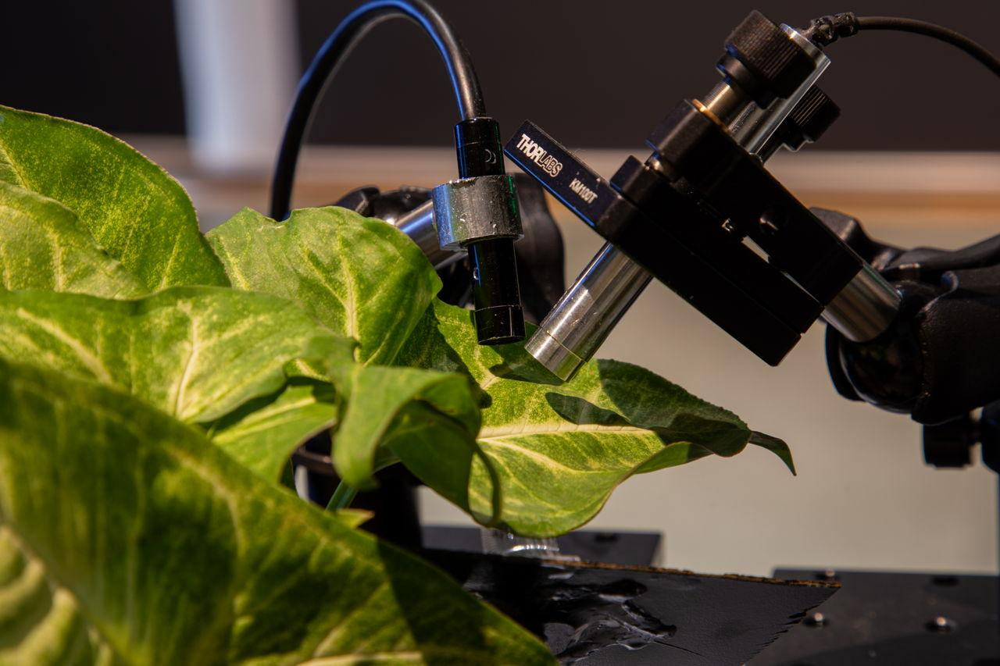
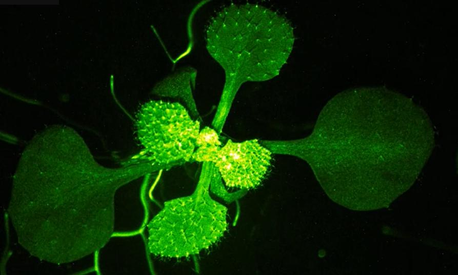
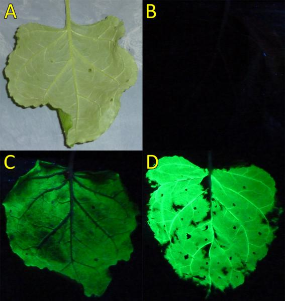

This is a hypothetical plant synthetic biology and environmental monitoring project for portfolio and educational use. BioLume Sentinel has not been built, tested, or validated by me. The figures are reference visuals or concept placeholders. The numbered citations connect the text and captions to supporting literature, but the images are not experimental data from this project.
BioLume Sentinel is a plant-based contamination warning system: roots encounter a pollutant, stress-responsive sensing circuits activate, the signal is routed into a visible or camera-readable reporter, and the plant becomes a living map of where soil chemistry may be unsafe [1,2,3,4].
Heavy metals, industrial chemicals, and agricultural residues can stay hidden in soil long after the original pollution source is gone. Standard chemical testing is accurate, but it is usually expensive, spot-based, and delayed. Plants already respond to soil chemistry through root uptake, stress signaling, hormone changes, oxidative stress pathways, and gene expression shifts. BioLume Sentinel turns that natural sensitivity into a visible reporting concept.
The project imagines a non-food model plant, such as Arabidopsis thaliana or Nicotiana benthamiana, engineered with pollutant-responsive promoter systems connected to a fluorescent or bioluminescent reporter. Plant-based biosensors and phytosensors have already been explored for environmental monitoring, while engineered bioluminescent plants show that visible plant light output is technically possible [1,2,3]. BioLume Sentinel does not claim to replace laboratory soil analysis. It works more like a biological first-pass warning layer: flag suspicious zones, guide sampling, and show whether a plant is experiencing biologically available contamination rather than only measuring total chemical concentration. The hard parts are specificity, false positives, weak light output, containment, and making sure the plant reports contamination without becoming part of the contamination problem.

The visible part of BioLume Sentinel is the reporter. A contamination signal would not be shown as vague plant sickness; it would be routed into a measurable output such as luciferase-based bioluminescence, fluorescent protein expression, or a pigment reporter. Fungal bioluminescence systems are useful as a reference because they can use plant metabolites such as caffeic acid to support self-sustained glow in engineered plants [2,3]. For field use, though, the output would need to be calibrated against background light, plant age, tissue thickness, camera sensitivity, and normal stress responses.

The sensing layer starts near the roots, where the plant is exposed to dissolved metals, salts, nitrates, or organic pollutants. Instead of claiming one plant can detect everything, BioLume Sentinel would use separate promoter-reporter modules for specific contaminant classes. Heavy-metal-responsive circuits, transcription-factor biosensors, and phytosensor systems show the logic: a chemical stress activates a regulatory element, and that activation drives a visible reporter [1,5,6]. The design avoids using edible crop plants so the sensor does not enter the food chain.

Plants react to many stresses at once, so a simple “stress equals glow” system would be useless. Drought, heat, salt, nutrient deficiency, pathogens, and mechanical damage could all create misleading signals. BioLume Sentinel handles this by requiring signal gating: a reporter activates only when a pollutant-responsive promoter overlaps with a second stress marker or root-zone exposure pattern. Multiple reporter colors or timing windows could separate heavy-metal exposure from general plant stress. If the signal does not match the expected tissue location, timing, and dose response, it gets treated as a false positive rather than proof of contamination.

The plant would only be useful if the signal can be read consistently. Before field testing, reporter output would be calibrated in growth chambers using known contaminant concentrations, clean controls, mixed-stress controls, and soil chemistry measurements. The goal is not a pretty glowing plant; the goal is a map. Camera imaging, time-lapse photography, or low-cost optical readers would convert reporter brightness into relative warning zones. Any positive field signal would still require chemical soil testing before cleanup decisions are made.
Practical controls that keep the sensor from becoming the problem:
Development pathway for validating the concept before any environmental deployment: